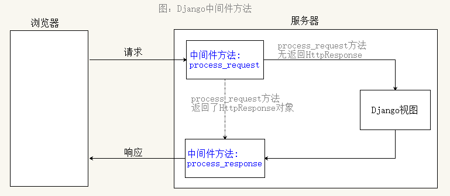

中间件
- 装饰器：不在改变原有函数的前提下，在函数调用之前或之后执行额外的操作
- Django中间件：
- 一个轻量级、底层的插件系统，用于在视图函数调用之前或之后执行额外操作，在全局上修改Django的输入或输出；
一、中间件使用

- 定义中间件类： 通过继承Django的
MiddlewareMixin扩展类实现：__init__(self, get_response=None)- 服务器启动，初始化中间件类时被调用，只执行一次
process_request(self, request):- 在视图执行之前调用，注意：该方法可以返回None或者response对象，如果返回response对象，则视图函数就不会再执行了
process_response(self, request, response):- 在视图执行之后调用，必须返回
response对象
- 在视图执行之后调用，必须返回
- 在
setting.py文件中的MIDDLEWARE中注册
案例：
定义好中间件： 在项目中新建一个
middlewares.py文件，然后在该文件中定义中间件类：class MyMiddleware(MiddlewareMixin): def __init__(self, get_response=None): super().__init__(get_response) print('init') def process_request(self, request): print('before 视图') # 注意：可以返回None或者response对象，如果返回response对象，则视图函数就不会再执行了 def process_response(self, request, response): print('after 视图') return response在settings.py 文件中添加注册中间件
MIDDLEWARE = [ 'django.middleware.security.SecurityMiddleware', ... 'middlewares.MyMiddleware', # 注册中间件 ]定义一个视图进行测试
def index(request): print('==index==') return HttpResponse('hello django')执行结果
init before 视图 ==index== after 视图注意：调试模式下
__init__方法会执行两次
二、MiddlewareMixin源码参考
class MiddlewareMixin(object):
def __init__(self, get_response=None):
self.get_response = get_response
super(MiddlewareMixin, self).__init__()
def __call__(self, request):
response = None
if hasattr(self, 'process_request'):
response = self.process_request(request)
if not response:
response = self.get_response(request)
if hasattr(self, 'process_response'):
response = self.process_response(request, response)
return response
三、多个中间件的执行顺序

示例
再定义一个中间件类
class MyMiddleware2(MiddlewareMixin): def __init__(self, get_response=None): super().__init__(get_response) print('init 2') def process_request(self, request): print('before 视图 2') def process_response(self, request, response): print('after 视图 2') return response注册
MIDDLEWARE = [ 'django.middleware.security.SecurityMiddleware', ... 'middlewares.MyMiddleware', # 注册中间件 'middlewares.MyMiddleware2', ]执行结果
before 视图 before 视图 2 ==index== after 视图 2 after 视图
结论
- 对于视图之前执行的
process_request方法，先 注册的中间件先执行 - 对于视图之后执行的
process_response方法，后 注册的中间件先执行